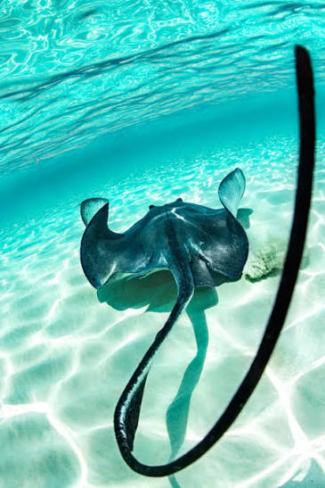

01
Habitat
Stingrays can be found in oceans around the world, with many species living near the seafloor.
BENEATH THE SURFACE
Discover the fascinating creatures that glide silently across the ocean floor.
Stingrays use their large fins to move gracefully through the water.
GET TO KNOW THEM

Stingrays are fascinating marine animals related to sharks.
Their flattened bodies and wide pectoral fins allow them to glide through the water. Many stingrays spend much of their time close to the ocean floor, searching for food hidden beneath the sand.
Although they can look intimidating, stingrays generally avoid people and use their defensive structures mainly when they feel threatened.
Learn about stingrays ↗QUICK FACTS
01
Stingrays can be found in oceans around the world, with many species living near the seafloor.
02
Many stingrays feed on creatures such as crustaceans, worms, small fish and other animals living near the bottom.
03
Their large pectoral fins allow them to move through the water by either flapping or undulating their fins.
04
Some stingrays have a venomous spine near their tail that can be used for defence.
READY TO DIVE DEEPER?